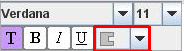

Welcome to combinFormation (kom-bahyn
fawr-mey-shuhn).
Please check out the menu to the right, as it connects you to important
information about how to operate our software.
Launch combinFormation
to use the internet for expressing your
creativity. (something we noticed is that)
It does a fine job of organizing and
collecting
information as well! Sometimes when you use it, you'll
discover that (all of a sudden) you found something new and unique,
something important to you that would have been REALLY hard
to find if you were just using
google, or
yahoo, or
liveSearch.
Think of combinFormation as a different way to see all those search
engines out there, which intelligently
searches webpages (as intially found by google, yahoo, etc) for any relevant pieces of information.
We constantly use combinFormation ourselves, and hope you will too!
bigger display -> better experience
more RAM + faster CPU = better performance
Tools > Internet Options.Security tab.http://ecologylab.cs.tamu.edu to your trusted sites.Trusted Sites, and Custom Level.
Automatic prompting for file downloads.
Navigate programs and files in an IFRAME.
It should around the 13th item under Miscellaneous.
OK twice to return to browsing,
then, Click launch.Start > Settings > Control Panel.
Macintosh HD > Applications > Utilities > Java
> J2SE 5.0 ( or a diff version) > Java Preferences.
Start > Settings > Control Panel.
Macintosh HD > Applications > Utilities > Java
> J2SE 5.0 > Java Preferences.
General tab.
Temporary Internet Files, click on Delete Files
Start > Settings > Control Panel > Java
Macintosh HD > Applications > Utilities > Java
> J2SE 5.0 > Java Preferences
Finder > username > Library > Caches > Java > logC drive > Documents and Settings > username > Application Data > Sun > Java > Deployment > logjavaws.
You can express interest in an image, a word in a text element, or a word in the details is to model your interests and to work on your behalf. This rating (scale -5 to +5) tells the agents what you want!
The mixer lets you determine the proportion of images-to-text that the agent will add to the display, and it starts at 50-50. Slide it to the left for more text, or to the right for more images. If the agent runs out of images or text, then it will wait a while for it to download more. If it still doesn't have what you want, then it will just substitute the what it does have.
Text:
Edit existing text. Or, if you wish to add your
own text annotations to the web page, you will use the text tool.
Left click on the text tool in the basic tool set to activate it.
Once it is activated left click and drag the mouse to make a
text box. You will see a colored box form as you drag the mouse
that shows you how big your text box will be. To set the size
of the text box, stop dragging and let go of the left mouse
button. Now you can begin typing text into the box. Once
you are finished, click outside the text box with the left
mouse button. It is suggested you switch to the move tool at
this point to position your text box.
The cool space is described by the display as a large rectangle in
background, in the middle of your window. If you move an piece of
information to the cool space, it will tell the agent to
keep that element and not get rid of it. Having just a part of an
element touching the rectangle is the same as having the element
completely inside the rectangle.
You can also resize the cool space rectangle by clicking on it and
dragging it to the size you want.
The hot space is the area outside the rectangle, and is where the agent will visualize information elements that it finds. This is generally where you will be expressing different levels of interest, and discovering new areas. The information that is placed here will constantly be changing, and if you want to keep them, you should move them to the cool space.
Resize Bars
This next tool is one you will more than like use a lot. The
squares highlighted in red are the resize boxes. Clicking on
one of these squares with the left mouse button and dragging
will allow you to resize the element. As you mouse over these
squares you will notice the mouse cursor change into the
resize icon like this . This cursor just lets you know you
can now resize the element. To further help while resizing,
what the gray border that appears when dragging the mouse
during resizing. It lets you know what size the resized
element will be, or in the case of text, how much space
the text will have to fit in.
Translucence
You may notice elements in combinFormation that seem to have
fuzzy or blurred edges. This is the work of the translucence
tool. It makes the edges of images translucent, or partially
clear, so you can blend them together easily. This can be
used when you have images you might feel are related and you
want to group them closely together. As you can see, on this
image there is a check mark next to the word translucence.
That means the tool is on and the edges of the image will
be clear. To turn it on or off, left click where the check
mark is.
This is what you will see if place your mouse over an text element. As you may
notice, the difference between this tool and the image tool is that
the translucence tool is replaced with a set of text tools that allow you to alter
the color scheme, font, style, and size of the text in your text box.
Font
Clicking on this menu will drop down a list of fonts. Clicking on a font name will change the
font of the highlighted area of the text element. If no text is highlighted, clicking on the
font name will modify the text of the entire text element.
Font Size
Clicking in this area will drop down a list of numbers. The number on the display correlates to the current
font size of your text element. When you choose the font size you may note that the shape of the
text may change. If this happens you can resize the text box, using the resize bar to fix the problem.
Font Color & Background (Stroke) Color
Using the T button, you can change both the font color and the background color of the text.
Clicking on the T button will first bring up a window entitled "Choose Font Color." You can choose
a font color in three different ways: using Swatches, HSB, or RGB. In Swatches,
there is a palette of pre-selected colors in boxes. Click on a box to select a color.
Your choice will automatically be added to the Recent palette at the right of the
window. Access the HSB selection by clicking the HSB tab at the top of the window.
Here, you can change the Hue, Saturation, and Brightness of a color. You can specify
this numerically by entering values or using the arrows to increment or decrement
the aspect of the color. You can also simply drag the white circle on the color picture at the left.
The R(red)G(green)B(blue) values will be automatically adjusted to reflect
the changes you have made. Like the HSB selection, access RGB selection by clicking
the RGB tab at the top of the window. Drag the notches of the sliding scaled to adjust
the balances of red, green, and blue, or simply adjust the values numerically, using the indicators
at the right of the sliders.
Using the color selection in the swatches, the HSB, or the RGB tabs, you can specify a certain color.
When you choose a color, a Preview is shown in the box at the bottom of the window.
Also, a display of how that color looks around black and white is shown in the Preview.
When you are satisfied with a color for the font, click the OK button. If you would
like to set all the windows back to their default position, click Reset.
Upon clicking the Ok button, another window entitled "Choose Stroke Color" will appear.
Follow the same steps as above to pick your desired background color for the text.
If you are satisfied with the current background color that you had before bringing up the
menu, click Cancel. Otherwise, choose Ok or Reset.
The appearance of the T button will change to reflect the changes you have made to the text.
The background of the T button will be the background (stroke) color of the text, and the T itself
will be the color of the font color.
Font Style
Clicking on the B, I, and U buttons will change the style of the text (bold, italics, underline).
The appearance of these buttons will change to reflect the changes you have made to the text.
When all the text in an element is the same style, the background of the button of that style
will be copmletely shaded. For example, if all the text in an element was bold, the button would look
like this: (show picture). If only some of the text is selected in an element and you change the style
of that particular text, this change will be noted by the background shading of the style button. The
bottom half of the button will be shaded to reflect that only the selected portion of text has the style change.
The bottom half of the button background represents the text that is currently selected. The top
half of the button background represents the general style settings for the whole element itself. When the bottom
half of the button is
shaded, it means that the style is applied to the selected text but that the style is not applied
to the rest of the text in the element. When the bottom half of the button is
white, it means that the style is not applied to the selected text but that the style is applied to
the rest of the text in the element.

Font Shape
Clicking on this menu will drop down a list of different shapes for the background color.
The last option with the line through it means that no separate background color will be displayed behind
the text.
Metadata Details
This box includes information about the location on the Web where the element was found.
It includes document location and hyperlink document location. It also displays
additional information such as the query that was sent to the search engine, the title of the source webpage,
and captions on images. You can use this box to quickly learn about the source of an element.
Searching
By clicking on this tool, you can start a new combinFormation search on the one element. It
generates a google search with a search query automatically formulated from terms in the elements.
Navigating
Using this tool, you can visit the source webpage where the element is from originally. This will open a new
browser window that is pointed at the address of the source of which the element came.
Cutting
Click on this tool when you would like to permanently remove an element from the screen view.
Latching
This tool enables you to create a single element floating cool region. The agent will not remove
elements latched by you even though the element is in the hot space. You can latch elements
by clicking on this button. Click another time on the button to unlatch the element.
After saving a composition space, you can easily move it onto a web server. This is the same as what you would do to publish a regular HTML web page. You can then link the composition space into a regular web page.
In order to do this, you must create a link tag in HTML that connects your published composition space to combinFormation. You do this by passing your space to a special publisher's page that we have arranged for you.
You can do it like this
(expect without line breaks in the midst of
the url):
<a target="_blank"
href="http://ecologylab.cs.tamu.edu
/combinformation/launch/regenerate.html?
infospace=http://yourserver.net/yourDir/yourSpace.xml">
There are some additional arguments you can pass. One controls whether the composition space will start with the generative agent playing or paused. The default is paused. Also, you can pass a title in for the published composition space. This title will be integrated into the intermediate web page that your users launch combinFormation from. (You must also change all instances of space to %20 in this title.) For example
<a target="_blank" href="http://ecologylab.cs.tamu.edu/combinformation/launch/regenerate.html?infospace=http://yourserver.net/yourDir/yourSpace.xml&start=play&title=Zinnias%20and%20Petunias">
As an alternative, you may include a small JavaScript file that we provide. Then, you will get a small combinFormation launch window, that will not cover up your page. Additionally, you will no longer need to convert spaces. The JavaScript function calling syntax is simpler:
function regeneratePopup(infospace, title, start)
For example,
<script src="http://ecologylab.cs.tamu.edu/combinformation/publish.js"
language="JavaScript"></script>
<a
href="javascript:regeneratePopup('http://yourserver.net/yourDir/yourSpace.xml', 'Zinnias and Petunias', 'play')">
What is working well for you? What would you like to see improved?
What would you like that is new?
Would you like to use the program in a site you are building?
We'll be grateful if you take the time to let us know about your experiences.